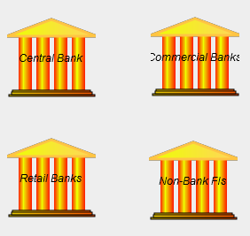

There can be any number of Godley Tables--each representing a different financial institution or sector in an economy--in the one diagram. The name of the institution can be altered by clicking on the default name ("Godley0" in the first one created) and altering it. Here is an example with 4 such institutions/sectors defined:

If there are interlocking accounts in these banks--if one lends to another for example--then what is an asset for one must be shown as a liability for the other. This is not yet enforced by the program, but will be in later versions.